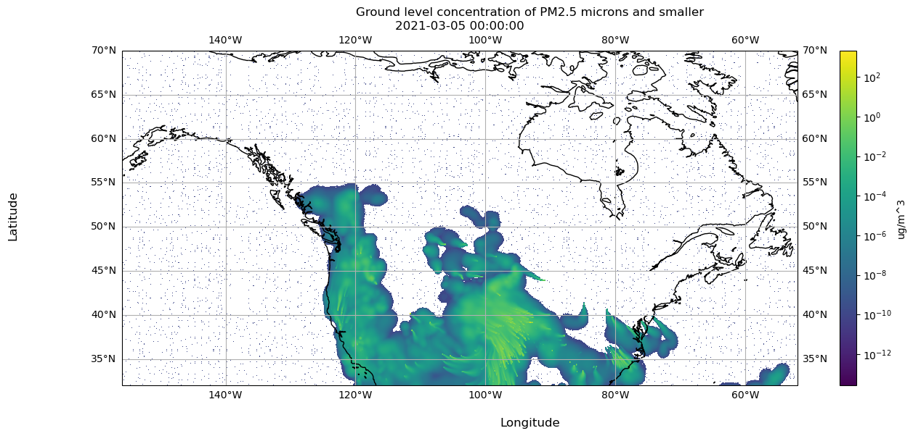

It is important to understand exactly what data is available and how to obtain that data.
We encourage you to explore the dataset on UBC’s website to further understand the dataset’s use as described by UBC.
Here we establish:
What systems are available to obtain the smoke forecast data from UBC?
What are in the files that UBC provides?
What metadata is associated with the files we obtain, both from within the file and about the files as a whole?
This information was not determined the first time we explored this dataset.
As seen in the later chapters, we operated under misinformed assumptions and encountered issues only resolvable by operating on the data “blindly”. The purpose of this chapter is to establish the final set of information we learned about our data source after extensive exploration and manipulation.
4.1 Overview
The Weather Forecast Research Team at the University of British Columbia (UBC) generates a short term dataset of PM2.5 smoke particulate presence in North America. This is done using their The BlueSky Western Canada Wildfire Smoke Forecasting System. Over the past 3 years, each day four times a day, UBC creates 2-day forecasts of PM2.5 smoke particulate on the ground for Canada and the continental United States. Each such forecast is downloadable as a NetCDF file or KMZ file. UBC provides access to these predictions for free on a daily basis at their website firesmoke.ca.
4.2 UBC Smoke Forecast Files Access
4.2.1 Available Forecasts
All forecast files are uniquely identifiable with a forecast ID based on when their meteorology forecast is initiated, a smoke forecast initialization time, and by date. The time ranges of available files by forecast ID is shown in Table 4.1. Please note, there are occassional failed forecasts or otherwise unavailable files within the date ranges specified Table 4.1, see Section 4.4 for further details.
Table 4.1: Dates for which all forecast ID datasets are publicly available. All times are in UTC and the grid size is 12 km.
Forecast ID
Meteorology Forecast Initialization (UTC)
Smoke Forecast Initialization (UTC)
Start Date
End Date
BSC00CA12-01
00Z
08Z
March 4, 2021
Present Day
BSC06CA12-01
06Z
14Z
March 4, 2021
Present Day
BSC12CA12-01
12Z
20Z
March 3, 2021
Present Day
BSC18CA12-01
18Z
02Z
March 4, 2021
Present Day
The smoke forecasts are updated daily, including the present day, so there is no fixed end date. Therefore, the latest data must be downloaded on a regular basis. We have not implemented this process yet, so the latest forecast files we use are up to June 27, 2024.
There is no official source stating the earliest available date for each forecast. So, knowing the project began in 2021, we inferenced that the earliest available date would be in 2021. Via trial and error we found the earliest available dates.
4.2.2 Download Instructions
To download the 2-day forecast for the forecast initialization date of one’s choice, one follows the instructions below. The downloaded file can be a NetCDF or KMZ file.
Go to the URL: https://firesmoke.ca/forecasts/{Forecast ID}/{YYYYMMDD}{InitTime}/{File Type}
Where:
YYYYMMDD is the date of choice.
ForecastID and InitTime are the chosen values as described in Table 4.2.
File Type is either dispersion.nc or dispersion.kmz for either the NetCDF file or KMZ file, respectively.
Table 4.2: UBC Smoke Forecast Data Download Parameters. All times are in UTC and the grid size is 12 km.
Forecast ID
Smoke Forecast Initialization (UTC)
BSC00CA12-01
08Z
BSC06CA12-01
14Z
BSC12CA12-01
20Z
BSC18CA12-01
02Z
4.2.2.1 Download Example
Let’s try downloading the forecast for January 1, 2024 where the weather forecast is initiated at 00:00:00 UTC and the smoke forecast is initialized at 08:00:00 UTC by navigating to the corresponding URL.
Code
forecast_id ="BSC00CA12-01"yyyymmdd ="20210304"init_time ="08"url = (f"https://firesmoke.ca/forecasts/{forecast_id}/{yyyymmdd}{init_time}/dispersion.nc")print(f"Navigate to this URL in your browser: {url}")
Navigate to this URL in your browser: https://firesmoke.ca/forecasts/BSC00CA12-01/2021030408/dispersion.nc
4.3 The NetCDF File
Next, let’s look at what is within the NetCDF file located at the URL in our previous example.
4.3.1 File Preview
We load dispersion.nc using xarray, which provides a preview of the file.
Code
import xarray as xrds = xr.open_dataset("data_notebooks/data_source/dispersion.nc")ds
Hysplit Concentration Model Output lat-lon coordinate system
HISTORY :
4.3.2 File Attributes
dispersion.nc contains the following attributes. Note that for all files across forecast IDs, they have the same dimension and variable names:
4.3.2.1 Dimensions:
The dimensions described in Table 4.3 determine on which indicies we may index our variables.
Table 4.3: Description of Dimensions for Indexing Data in NetCDF Files
Dimension
Size
Description
TSTEP
51
This dimension represents the number of time steps in the file. Each file has 51 hours represented.
VAR
1
This dimension is a placeholder for the variables in the file.
DATE-TIME
2
This dimension stores the date and time information for each time step.
LAY
1
This dimension represents the number of layers in the file, which is 1 in this case.
ROW
381
This dimension represents the number of rows in the spatial grid.
COL
1041
This dimension represents the number of columns in the spatial grid.
4.3.2.2 Variables:
The variables described in Table 4.4 contain the data in question that we would like to extract.
Table 4.4: Description of Variables in NetCDF Files
Variable
Dimensions
Data Type
Description
TFLAG
TSTEP, VAR, DATE-TIME
int32
This variable stores the date and time of each time step.
PM25
TSTEP, LAY, ROW, COL
float32
This variable contains the concentration of particulate matter (PM2.5) for each time step, layer, row, and column in the spatial grid.
4.3.2.3 Attributes
Of the 33 available attributes we use the ones shown in Table 4.5:
Table 4.5: Description of Attributes in NetCDF Files
Attribute
Value
Description
CDATE
2021063
The creation date of the dataset, in YYYYDDD format.
CTIME
101914
The creation time of the dataset, in HHMMSS format.
WDATE
2021063
The date for which the weather forecast is initiated, in YYYYDDD format.
WTIME
101914
The time for which the weather forecast is initiated, in HHMMSS format.
SDATE
2021063
The date for which the smoke forecast is initiated,in YYYYDDD format.
STIME
90000
The time for which the weather forecast is initiated, in HHMMSS format.
NCOLS
1041
The number of columns in the spatial grid.
NROWS
381
The number of rows in the spatial grid.
XORIG
-156.0
The origin (starting point) of the grid in the x-direction.
YORIG
32.0
The origin (starting point) of the grid in the y-direction.
XCELL
0.10000000149011612
The cell size in the x-direction.
YCELL
0.10000000149011612
The cell size in the y-direction.
Let’s look closer at what exactly is within one NetCDF file in the following demo.
4.3.3 NetCDF Visualization Demo
In this demo we load one dispersion.nc file and explore how to visualize the data within the file.
4.3.3.1 Accessing the File
We use the forecast for March 4, 2021 where the weather forecast is initiated at 00:00:00 UTC and the smoke forecast is initialized at 08:00:00 UTC. You can download this file by navigating to the URL below.
Code
forecast_id ="BSC00CA12-01"yyyymmdd ="20210304"init_time ="08"url = (f"https://firesmoke.ca/forecasts/{forecast_id}/{yyyymmdd}{init_time}/dispersion.nc")print(f"Navigate to this URL in your browser: {url}")
Navigate to this URL in your browser: https://firesmoke.ca/forecasts/BSC00CA12-01/2021030408/dispersion.nc
4.3.3.1.1 Opening the File
We use xarray to open the NetCDF file and preview it.
Code
import xarray as xrds = xr.open_dataset("dispersion.nc")ds
Hysplit Concentration Model Output lat-lon coordinate system
HISTORY :
4.3.3.2 Using the Data
4.3.3.2.1 Accessing Arrays
The data we are interested in is the PM2.5 values. Let’s use xarray to preview the PM25 variable in our file.
Code
ds["PM25"]
<xarray.DataArray 'PM25' (TSTEP: 51, LAY: 1, ROW: 381, COL: 1041)>
[20227671 values with dtype=float32]
Dimensions without coordinates: TSTEP, LAY, ROW, COL
Attributes:
long_name: PM25
units: ug/m^3
var_desc: PM25 ...
xarray.DataArray
'PM25'
TSTEP: 51
LAY: 1
ROW: 381
COL: 1041
...
[20227671 values with dtype=float32]
long_name :
PM25
units :
ug/m^3
var_desc :
PM25
The dimensions of the PM25 data array are composed of TSTEP, LAY, ROW, and COL. We do not need the LAY dimension, so let’s use numpy to remove it.
Code
import numpy as npds_pm25_vals = ds["PM25"].valuesprint(f'The shape of the data contained in our files is: {np.shape(ds_pm25_vals)}')ds_pm25_vals = np.squeeze(ds_pm25_vals)print(f'After squeezing, the shape is: {np.shape(ds_pm25_vals)}')
1
Use .values to get the four dimensional array.
2
Use np.squeeze to drop the LAY axis
The shape of the data contained in our files is: (51, 1, 381, 1041)
After squeezing, the shape is: (51, 381, 1041)
4.3.3.2.2 Visualize Array in matplotlib
Now that we squeezed away the LAY dimension, we can index time step 15 and use matplotlib to visualize the timestep
Color PM25 values on a log scale, since values are small.
2
Ensure the aspect ratio of our plot fits all data, matplotlib can do this automatically.
3
Tell matplotlib our origin is the lower-left corner.
4
Select a colormap for our plot and draw the color bar on the right.
5
Create our plot using imshow.
6
Add a colorbar to our figure, based on the plot we just made above.
7
Set title of our figure.
8
Set title of our plot as the timestamp of our data.
9
Show the resulting visualization.
Notice there are no axis labels or metadata presented here. Next we will show how to use the metadata in dispersion.nc so the data is actually interpretable.
4.3.3.3 Incorporating Metadata to Visualization via Coordinates
4.3.3.3.0.1 Latitude and Longitude Coordinates
dispersion.nc includes attributes to generate the latitude and longitude values on the grid defined by NCOLS and NROWS. We use this grid to match each data point in the PM25 variable to a lat/lon coordinate.
Code
xorig = ds.XORIGyorig = ds.YORIGxcell = ds.XCELLycell = ds.YCELLncols = ds.NCOLSnrows = ds.NROWSlongitude = np.linspace(xorig, xorig + xcell * (ncols -1), ncols)latitude = np.linspace(yorig, yorig + ycell * (nrows -1), nrows)print("Size of longitude & latitude arrays:")print(f'np.size(longitude) = {np.size(longitude)}')print(f'np.size(latitude) = {np.size(latitude)}\n')print("Min & Max of longitude and latitude arrays:")print(f'longitude: min = {np.min(longitude)}, max = {np.max(longitude)}')print(f'latitude: min = {np.min(latitude)}, max = {np.max(latitude)}')
Size of longitude & latitude arrays:
np.size(longitude) = 1041
np.size(latitude) = 381
Min & Max of longitude and latitude arrays:
longitude: min = -156.0, max = -51.999998450279236
latitude: min = 32.0, max = 70.00000056624413
xarray allows us to create coordinates, which maps variable values to a value of our choice. In this case, we create coordinates mapping PM25 values to a latitude and longitude value.
Hysplit Concentration Model Output lat-lon coordinate system
HISTORY :
Now let’s move on to incorporating time stamp metadata.
4.3.3.3.1 Time Coordinates
Recall, there is a TFLAG variable in dispersion.nc.
Code
ds['TFLAG']
<xarray.DataArray 'TFLAG' (TSTEP: 51, VAR: 1, DATE-TIME: 2)>
[102 values with dtype=int32]
Dimensions without coordinates: TSTEP, VAR, DATE-TIME
Attributes:
units: <YYYYDDD,HHMMSS>
long_name: TFLAG
var_desc: Timestep-valid flags: (1) YYYYDDD or (2) HHMMSS ...
xarray.DataArray
'TFLAG'
TSTEP: 51
VAR: 1
DATE-TIME: 2
...
[102 values with dtype=int32]
units :
<YYYYDDD,HHMMSS>
long_name :
TFLAG
var_desc :
Timestep-valid flags: (1) YYYYDDD or (2) HHMMSS
The earliest and latest TFLAGs look like the following:
Code
print(f"Earliest available TFLAG is {ds['TFLAG'].values[0][0]}")print(f"Latest available TFLAG is {ds['TFLAG'].values[-1][0]}")
Earliest available TFLAG is [2021063 90000]
Latest available TFLAG is [2021065 110000]
This time flags require processing to be immediately legible. Let’s write a function to process the time flag accordingly. We use the datetime library.
Code
import datetimedef parse_tflag(tflag):""" Return the tflag as a datetime object :param list tflag: a list of two int32, the 1st representing date and 2nd representing time """ date =int(tflag[0]) year = date //1000 day_of_year = date %1000 final_date = datetime.datetime(year, 1, 1) + datetime.timedelta(days=day_of_year -1) time =int(tflag[1]) hours = time //10000 minutes = (time %10000) //100 seconds = time %100 full_datetime = datetime.datetime(year, final_date.month, final_date.day, hours, minutes, seconds)return full_datetime
1
Obtain year and day of year from tflag[0] (date).
2
Extract the year from the first 4 digits of tflag[0].
3
Extract the day of the year from the last 3 digits of tflag[0].
4
Create a datetime object representing the date.
5
Obtain hour, minutes, and seconds from tflag[1] (time).
6
Extract hours from the first 2 digits of tflag[1].
7
Extract minutes from the 3rd and 4th digits of tflag[1].
8
Extract seconds from the last 2 digits of tflag[1].
9
Create the final datetime object with the extracted date and time components.
Now we have datetime objects to represent the timeflag in a more legible and usable format.
Code
print(f"Earliest available TFLAG is {parse_tflag(ds['TFLAG'].values[0][0])}")print(f"Latest available TFLAG is {parse_tflag(ds['TFLAG'].values[-1][0])}")
Earliest available TFLAG is 2021-03-04 09:00:00
Latest available TFLAG is 2021-03-06 11:00:00
4.3.3.3.2 Visualize Array in matplotlib
Let’s visualize timestep 15 again, but now we can label the data using latitudes and longitudes, and the corresponding time flag.
Extract the PM2.5 data for the specified time step.
3
Parse the time flag for the specified time step.
4
Initialize a figure and plot with a specific projection.
5
Set the normalization for PM2.5 values to a logarithmic scale.
6
Define the extent of the plot based on the longitude and latitude range.
7
Set the aspect ratio of the plot to fit all data automatically.
8
Specify the origin of the plot as the lower-left corner.
9
Choose a colormap for the plot.
10
Create the plot using imshow with the specified parameters.
11
Draw coastlines on the plot.
12
Draw latitude and longitude lines with labels.
13
Add a colorbar to the figure based on the plot.
14
Set the x-axis label.
15
Set the y-axis label.
16
Set the title of the figure.
17
Set the title of the plot as the timestamp of the data.
18
Display the resulting visualization.

Now that we understand how to load the data and metadata from the file and process it for visualization, let’s establish the data and metadata available to us across all NetCDF files.
4.4 Information Across all NetCDF Files
Knowing what is within one NetCDF file as well as the date range for which we can download them, let’s establish the metadata associated with the NetCDF files as a collection.
4.4.1 Disk Size
For the time ranges we cover, Table 6.1 shows how large the set of files per forecast ID are.
Table 4.6: File Sizes and Counts for Each Forecast ID within the Specified Date Range
Forecast ID
Date Range
Size
File Count
BSC00CA12-01
March 4, 2021 - June 27, 2024
84G
1077
BSC06CA12-01
March 4, 2021 - June 27, 2024
78G
1022
BSC12CA12-01
March 3, 2021 - June 27, 2024
79G
1022
BSC18CA12-01
March 4, 2021 - June 27, 2024
79G
1023
Total
320G
4144
4.4.2 Temporal Data Availability
Here we show for what temporal range there is PM25 data available from the NetCDF files as a collection.
4.4.2.1 Available Time Ranges
We have downloaded all NetCDF files available within the time ranges specified by Table 4.1.
We want to describe exactly what time ranges are covered by each forecast. We will load the NetCDF file for the date March 3, 2024 for each forecast ID.
set paths to files, if you run this demo locally, adjust these as necessary
TODO
Now that we know what exactly is within a NetCDF file and across all the NetCDF files, we will continue to describe our data curation process. Next we describe how we load all of the data available from UBC onto our machine.